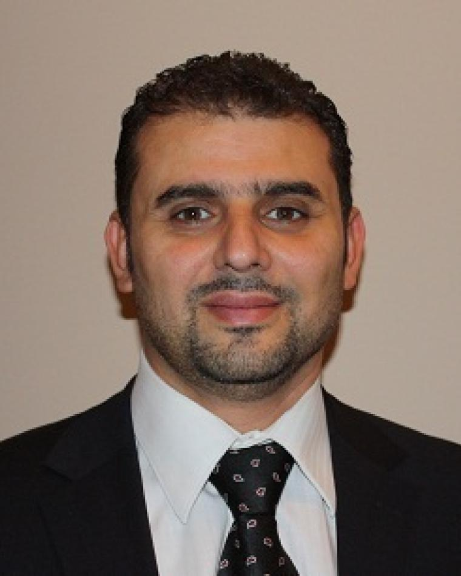

Workshop Overview
IMPACT targets a rapidly emerging reality: modern misinformation is increasingly multimedia-native and persuasion-optimized. It is no longer just a forged image or isolated deepfake clip, but an engineered package of visuals, captions, framing, narrative priming, and cross-platform remixing designed to manipulate belief and action.
Important Dates
| Contribution Submission | 26 July |
| Author Notification | 12 August (UPDATED) |
| Camera-Ready | 20 August |
| Author Registration | 20 August |
| Workshop Day | 10 November 2026, Rio de Janeiro |
Home
IMPACT is scoped around a central concern: as generative modeling improves across image, video, audio, and text, the main threat is no longer only whether media is fake, but whether it is strategically persuasive, contextually misleading, and capable of causing real-world harm at speed and scale.
In high-stakes settings such as elections, public health, emergencies, conflict reporting, and financial narratives, manipulated media can distort decision-making even when the manipulation is subtle. This pushes the field toward integrated integrity systems that combine detection, localization, provenance, contextual reasoning, robustness, and explanations that humans can trust.
IMPACT brings together researchers in multimedia forensics, multimodal learning, trustworthy AI, social and behavioral computing, authentication and provenance, and human-centered verification systems. The workshop is designed not just around benchmark accuracy, but around robustness, auditability, severity awareness, and deployment value.
The 2026 edition runs as a full-day workshop on 10 November 2026 at ACM Multimedia in Rio de Janeiro, with four keynotes, eight accepted oral presentations, the T-IMPACT dataset challenge session, and a community discussion. The full programme is on the Schedule tab.
Scope and Topics
Core Technical Areas
- Multimodal manipulation detection and localization across image, video, audio, and text
- Cross-modal semantic inconsistency and narrative distortion
- Authentication, watermarking, hashing, signatures, and provenance infrastructure
- Severity- and impact-aware modeling beyond binary labels
System and Deployment Areas
- Robustness under adversarial pressure and distribution shift
- Explainable and human-centered verification systems
- Platform-scale monitoring, moderation support, and triage
- Policy, governance, ethics, and responsible deployment constraints
Organizers
The organizing team spans multimedia forensics and authentication, multimodal learning and reasoning, privacy and trustworthy systems, and large-scale social and behavioral computing.
Organising Chairs
Priyanka Singh
The University of Queensland, Australia
Email: priyanka.singh@uq.edu.au
Senior Lecturer in Cyber Security at UQ. Her research spans multimedia forensics, privacy-preserving provenance, perceptual hashing, and accountable verification systems.

Xue Li
The University of Queensland, Australia
Email: xueli@uq.edu.au
Professor at UQ with expertise in data mining, social computing, and large-scale behavioral pattern discovery.
Pradeep K. Atrey
University at Albany, SUNY, USA
Email: patrey@albany.edu
Associate Professor and Co-Director of ALPS. His research includes multimedia authentication, provenance, privacy-aware analytics, and secure multimedia intelligence.
Program & Challenge Chair

Gagandeep Singh
The University of Queensland, Australia
Email: gagandeep.singh2@student.uq.edu.au
Research Assistant and Software Engineering student at The University of Queensland, working on multimodal misinformation detection.
Call for Papers
The IMPACT workshop solicits high-quality submissions advancing multimedia integrity under persuasion-oriented manipulation and contextual distortion.
We invite submissions in the following categories
- Full Papers
- Short Papers
- Posters
- System / Demo Submissions
Topics of Interest
- Multimodal manipulation detection and localization
- Cross-modal contradiction and narrative distortion
- Authentication, watermarking, and provenance
- Robustness to adversarial pressure and distribution shift
- Severity- and impact-aware modeling
- Human-in-the-loop verification and interfaces
- Platform-scale moderation support
- Policy, governance, and ethical constraints
Submission and Review
All submissions will be peer-reviewed by the program committee for originality, technical quality, clarity, relevance, and reproducibility. We encourage code, model cards, and evaluation artifacts where appropriate.
Accepted contributions will be presented as oral talks or posters/demos depending on program constraints, with an explicit focus on constructive discussion, failure-mode analysis, and cross-community exchange.
Submissions will follow the ACM Multimedia workshop format and appear in proceedings. Papers may be up to 6-8 pages and up to 2 additional pages for references. Please follow the official ACMMM guidelines for paper formatting. Submissions are intended to be single-blind and reviewed by at least two program committee members.
High-quality papers rejected from the ACM Multimedia 2026 main track may be submitted to the IMPACT workshop. Authors should submit the original reviews alongside a statement describing revisions made to the paper. The workshop organizers will review these materials and may invite eligible papers for inclusion. Accepted papers will be published in the ACM Multimedia 2026 workshop proceedings. All submissions must follow the official ACM Multimedia 2026 format.
ACM Multimedia 2026 is an on-site event only. This means that all papers and contributions must be presented by a physical person on-site; remote presentations will not be hosted or allowed. Papers and contributions not presented on-site will be considered a no-show and removed from the proceedings of the conference. More details will be provided to handle unfortunate situations in which none of the authors would be able to attend the conference physically.
Please follow https://2026.acmmm.org/site/calls-dates.html for further guidelines.
Submission linkImportant Dates
- Contribution Submission: 26 July
- Author Notification: 12 August (UPDATED)
- Camera-Ready: 20 August
- Author Registration: 20 August
Schedule
IMPACT 2026 runs as a full-day workshop on Tuesday 10 November 2026 at ACM Multimedia 2026 in Rio de Janeiro. All times are given in Brasília time (BRT, UTC−3).
| Time (BRT) | Session | Title, authors and affiliations |
|---|---|---|
| 09:00 – 09:10 | Opening | Welcome and workshop opening |
| 09:10 – 09:40 | Keynote | Keynote address (title TBC) National University of Singapore |
| 09:40 – 10:00 | Oral | SafeV-JEPA: World-Model Plausibility Lets You Measure Synthetic-Video Risks National University of Singapore |
| 10:00 – 10:20 | Oral | TrustLift: When Images Make False Claims Look True Bauman Moscow State Technical University; Siberian Federal University (Igor Masich) |
| 10:20 – 10:50 | Break | Coffee break and networking |
| 10:50 – 11:20 | Keynote | Keynote address (title TBC) Rutgers, The State University of New Jersey |
| 11:20 – 11:40 | Oral | When Agents Have Faces: Deepfake Avatars, Emotion Signals, and Strategic Trust in Human–LLM Interaction ITMO University; AIRI; The University of Western Australia; ISP RAS; Innopolis University |
| 11:40 – 12:00 | Oral | Adaptive Dual-Channel Diffusion of Disinformation and Correction with LLM-Calibrated Influence on Networks Thapar Institute of Engineering & Technology; The University of Queensland |
| 12:00 – 13:00 | Break | Lunch |
| 13:00 – 13:30 | Keynote | Keynote address (title TBC) University of Ottawa |
| 13:30 – 13:50 | Oral | D-SECURE: Dual-Source Evidence Combination for Unified Reasoning in Misinformation Detection The University of Queensland |
| 13:50 – 14:10 | Oral | T-IMPACT: A Severity-Aware Benchmark for Contextual Image–Text Manipulation The University of Queensland; Brisbane, Australia |
| 14:10 – 14:40 | Challenge | T-IMPACT Dataset Challenge The University of Queensland; Brisbane, Australia |
| 14:40 – 15:00 | Oral | ExactUMM: Exact Task and Data Unlearning via Model Merging The University of Queensland |
| 15:00 – 15:30 | Break | Coffee break and networking |
| 15:30 – 15:50 | Oral | Evaluating the Trust and Provenance Guarantees of Multimedia Authentication Codes: a Visualization-Driven Deep Cryptanalytic Assessment of SipHash Indian Institute of Technology Kharagpur |
| 15:50 – 16:10 | Discussion | IMPACT community discussion and audience Q&A |
| 16:10 – 16:15 | Transition | Remote keynote connection and AV check |
| 16:15 – 16:45 | Keynote | Keynote address (title TBC) University at Buffalo, State University of New York (SUNY) Fixed slot · 14:15–14:45 Buffalo EST |
| 16:45 – 17:00 | Closing | Conclusions, acknowledgements and workshop close |
Keynote Speakers
The keynote programme brings complementary perspectives across multimedia forensics, computational social science, multimedia systems and digital twins, and persuasive misinformation analysis. Speakers are listed in programme order.
Mohan S. Kankanhalli
National University of Singapore
A pioneer in multimedia computing, computer vision, and trustworthy AI, with strong contributions to content authentication, multimedia security, and privacy-preserving analytics.
Keynote · 09:10–09:40 BRTVivek K. Singh
Rutgers, The State University of New Jersey
Professor in the School of Communication and Information and Director of the Behavioral Informatics Lab at Rutgers. His work sits at the intersection of computational social science, data science, and multimedia information systems, with a sustained focus on fairness and accuracy in web-scale content analysis.
Keynote · 10:50–11:20 BRT
Abdulmotaleb El Saddik
University of Ottawa
Distinguished University Professor at the University of Ottawa, Director of the Multimedia Communications Research Laboratory, and Editor-in-Chief of ACM Transactions on Multimedia Computing, Communications and Applications. His research spans intelligent multimedia computing, haptics, and digital twins built on AI, IoT, and secure multimodal interaction.
Keynote · 13:00–13:30 BRTSiwei Lyu
University at Buffalo, State University of New York (SUNY)
A globally recognized leader in multimedia forensics, authenticity, and deepfake detection. His work aligns strongly with persuasion-oriented misinformation, provenance, and accountability in visual evidence.
Keynote · 16:15–16:45 BRT (remote, fixed slot)T-IMPACT Dataset Challenge
A central objective of IMPACT is to catalyze reproducible progress on impact-aware integrity, where the goal is not only to decide whether content is manipulated, but to quantify how it misleads and how harmful it could be if consumed and shared. The T-IMPACT challenge puts that goal into a shared evaluation.
Basis
The challenge runs on the dataset and severity protocol introduced in the T-IMPACT benchmark paper, presented at this workshop in the slot immediately before the challenge session: T-IMPACT: A Severity-Aware Benchmark for Contextual Image–Text Manipulation, Gagandeep Singh, Aaditya Yadav and Priyanka Singh, The University of Queensland, in the ACM Multimedia 2026 workshop proceedings (DOI 10.1145/3841453.3841500, preprint). The five severity components, the isotonic calibration of the severity score, the band boundaries and the manipulation taxonomy used for scoring are all defined there, and participants should read it before building a system. Entries that report on T-IMPACT are asked to cite the paper.
Challenge Motivation
Existing benchmarks often reward binary detection while failing to capture realistic manipulations involving subtle visual edits, narrative reframing, contextual distortion, and multimodal persuasion. A system that flags a crude splice but cannot separate a harmless retouch from a caption swap that reassigns a disaster photograph to a different conflict is of limited use to a newsroom or a platform triage queue. T-IMPACT is therefore scored on graded severity and calibration as well as detection, and rewards robustness and explainable evidence rather than narrowly defined benchmark accuracy.
Dataset and Splits
T-IMPACT consists of paired authentic and manipulated image–text items reflecting real misinformation strategies across political events, public health, disasters, and conflict reporting. Each manipulated item carries a manipulation type label, a graded severity score derived from five severity components and isotonically calibrated, an ordinal severity band, and localization signals for the altered image regions and text spans. Manipulations include object insertion, removal, compositing, inpainting and localized attribute changes; caption swaps, narrative reframing and temporal or geographic misattribution; and mixed cases where both modalities are altered.
| Split | Contents | Availability |
|---|---|---|
| train | Images, captions and the full annotation set including severity components and localization masks | Released with the starter kit on registration |
| val | Same annotation schema as train; intended for model selection and for validating submission formatting | Released with the starter kit on registration |
| test | Images and captions only, with item_id. Includes a robustness subset carrying compression, rescaling and paraphrase perturbations of items drawn from the same source pool |
Released to registered teams on registration; labels are never distributed |
The robustness subset is not identified in the released files. Teams submit a single prediction file covering the whole test split, and organizers report clean, perturbed and delta scores separately.
Tasks and Tracks
Task 1 — Authenticity classification (ranked)
Given an image–text pair, decide whether the item has been manipulated in either modality. Submissions provide a binary decision and a calibrated confidence, so that over-confident detectors are penalized rather than rewarded.
Primary metric: macro-F1. Secondary: ROC-AUC, precision/recall at the submitted threshold, and expected calibration error. Ties broken on ROC-AUC.
Task 2 — Severity and impact estimation (ranked)
Predict how misleading the item is, as a continuous severity score in [0, 1] and as an ordinal band. This is the task the benchmark exists for: two items may both be manipulated while differing by an order of magnitude in the harm they could cause if shared.
Primary metric: Spearman rank correlation against the calibrated severity score. Secondary: MAE, RMSE, and ordinal consistency (adjacent-band accuracy) over the bands. Ties broken on MAE.
Task 3 — Evidence localization (explainability track, unranked)
Return the evidence behind the decision: manipulated image regions as bounding boxes and manipulated or misleading text as character spans. This track is judged qualitatively rather than placed on a leaderboard, and strong entries are invited to demo their outputs in the challenge session.
Reported metrics: IoU-based region scores and token-level F1, alongside organizer review of a sampled set of cases including the failure cases.
Teams may enter Task 1 alone, Task 2 alone, or both. Task 3 requires an entry in at least one ranked task. All results are additionally stratified by manipulation type and domain, so a system that wins overall while collapsing on one domain is visible as such in the report.
Overall Ranking
Task 1 and Task 2 are ranked independently on their primary metrics. An overall standing is computed as the mean of a team's two task ranks, for teams that entered both. A team that enters one task is ranked in that task only and is not eligible for the overall standing.
Submission Package
There is no external evaluation server for this edition. Submissions are sent by email as a single ZIP
archive named timpact2026_<team_name>.zip, using the subject line
[T-IMPACT 2026] Submission — <team_name>. Archives above 25 MB should be sent as a
link to institutional cloud storage with access granted to the submission address.
task1_predictions.csv
| Field | Type | Definition |
|---|---|---|
| item_id | string | Identifier exactly as given in the test split. One row per test item, no omissions. |
| pred_label | integer | 0 for authentic, 1 for manipulated, at the team's chosen operating threshold. |
| pred_score | float | Calibrated probability in [0, 1] that the item is manipulated. Used for ROC-AUC and calibration error. |
task2_predictions.csv
| Field | Type | Definition |
|---|---|---|
| item_id | string | Identifier exactly as given in the test split. One row per test item. |
| severity_score | float | Predicted severity in [0, 1]. Authentic items should be predicted at or near 0. |
| severity_band | string | One of none, low, moderate, high, severe, following the band definitions in the dataset card. |
task3_predictions.json
Bounding boxes are [x, y, width, height] in pixels on the released image. Text spans are
character offsets into the released caption, end-exclusive. Items with no predicted evidence may be
omitted or given empty lists.
metadata.json
method.pdf
Up to two pages plus references, in the ACM Multimedia format, describing the architecture, the training and calibration procedure, any external data or pretrained checkpoints, and the failure modes the team observed. A submission without a method description is scored but excluded from the standings, because an unexplained number does not advance the field. Teams are encouraged but not required to release code.
Timeline
| Registration | Open now, and rolling until the submission deadline |
| Starter kit, train and val released | On registration |
| Test split released to registered teams | On registration |
| Submission deadline | 30 October 2026, 23:59 AoE |
| Results notified to teams | 6 November 2026 |
| Results and discussion at IMPACT 2026 | 10 November 2026, 14:10–14:40 BRT |
Registration is a short email to the challenge address naming the team, its members and their affiliations. All three splits and the starter kit are returned by reply, so a team can start the same day it registers; test labels are never distributed and the honour-system rules below carry the integrity of the evaluation in place of a timed release window.
Rules and Eligibility
Teams may submit up to three archives before the deadline and the last valid archive received is the one
scored; teams should state plainly in the email if an earlier submission is being superseded. Any
publicly available pretrained model or external corpus may be used provided it is declared in
metadata.json, and undeclared resources are grounds for withdrawal of a result. Manual
annotation of test items, attempts to identify the source of test images, and any use of the robustness
structure of the test split are not permitted. Organizers and their immediate research groups may submit
for reference but are shown separately and are not ranked. Participation does not require a workshop
paper, though teams are welcome to submit their method to a future edition, and at least one member of
each shortlisted team is expected to attend the session on site.
Recognition
The leading team in each ranked task and the strongest explainability entry are announced during the challenge session and listed on this page afterwards, together with a short organizer report covering the stratified and robustness results across all submissions. Shortlisted teams are invited to give a brief description of their approach in the session.
Release, Governance, and Ethics
T-IMPACT is released with responsible-use terms to support detection and verification research without facilitating misuse. Registration requires agreement to those terms, which cover redistribution, retention, and use of the manipulated items. Documentation accompanying the release describes construction procedures, annotation pipelines, limitations, privacy considerations, and fairness considerations across regions and languages. Teams reporting on T-IMPACT are asked to carry those limitations into their own write-ups rather than presenting the severity scores as ground truth about real-world harm.
Registration, Submission and Enquiries
Send registrations, submission archives and any questions to gagandeep.singh1@uq.edu.au.
Submission subject line: [T-IMPACT 2026] Submission — <team_name>